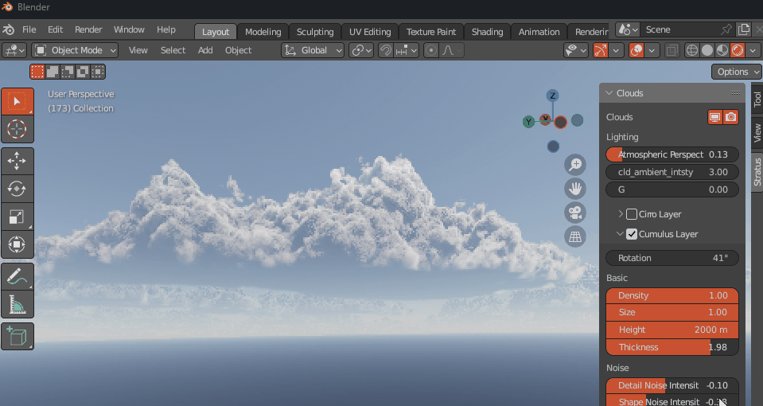
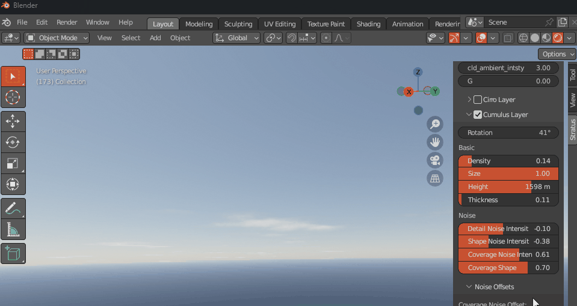
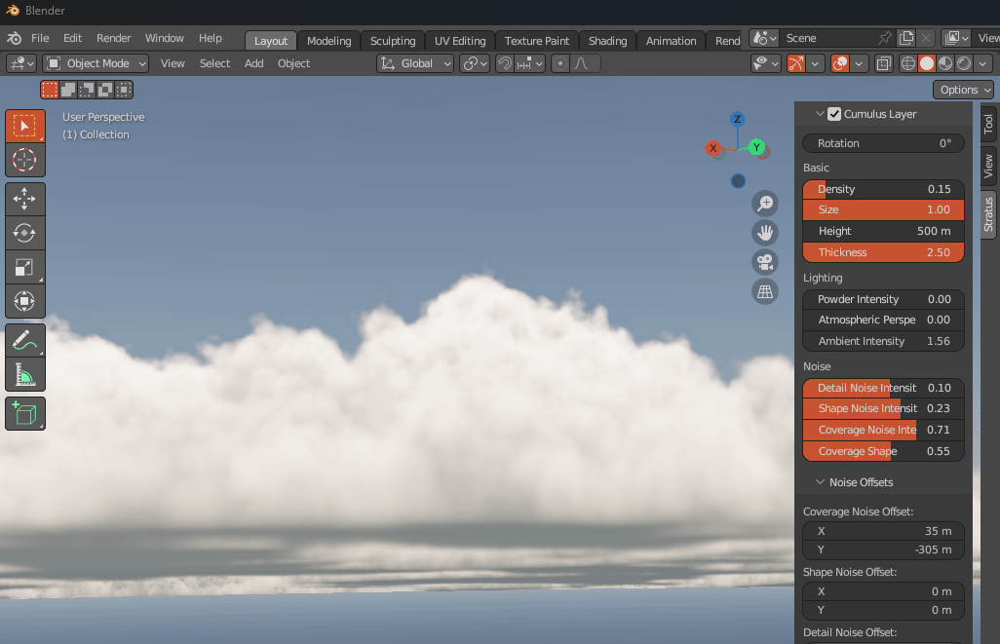
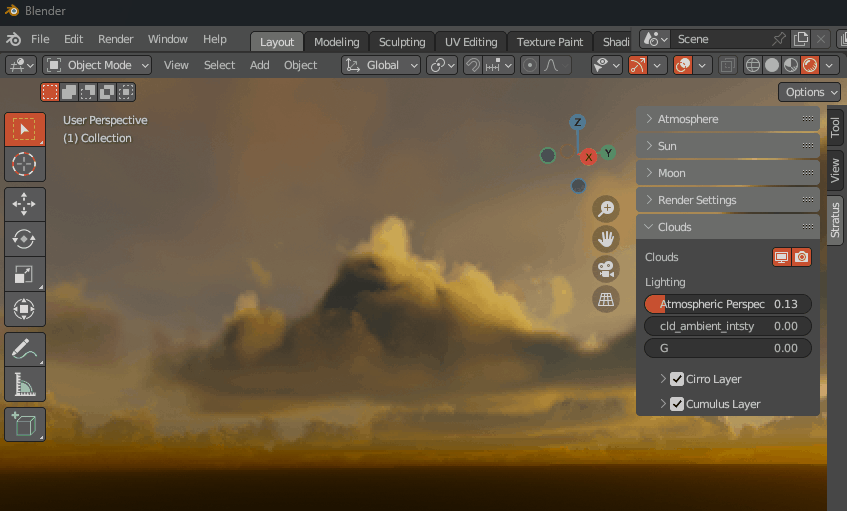
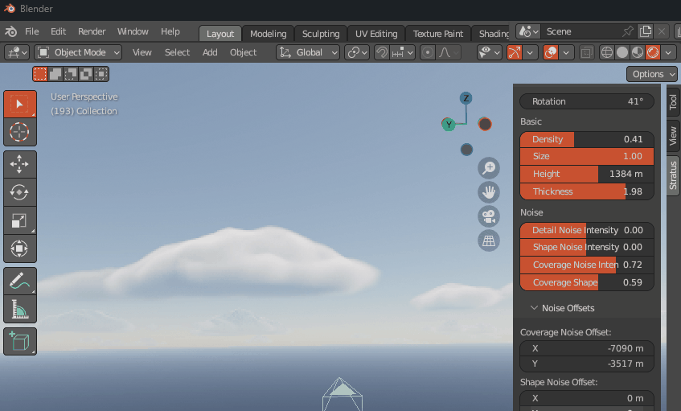
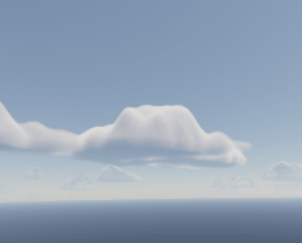
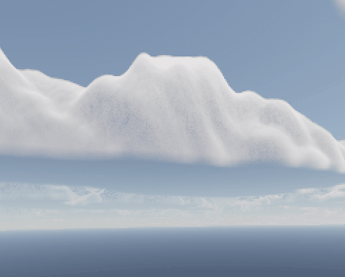
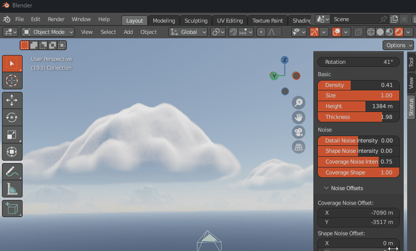

Clouds
Note
This page is under construction.
Note
Video tutorial coming very soon!
Basic
Rotation
Cloud layer rotation.

Density
Cloud layer density.

Density Height
Cloud layer density height.
Size
Cloud layer size.

Height
Height from sea level.

Thickness
Cloud layer thickness.

Lighting
Powder Intensity
Intensity of the dark edges on clouds, known as the powdered sugar effect.

Atmospheric Perspective Intensity
The effect the atmosphere has on the appearance of the clouds as viewed from a distance.

Ambient Light Intensity
The intensity of ambient light coming from the atmosphere.

Attenuation
Noise
Coverage Noise Intensity
Intensity of coverage noise applied to cloud layer.

Shape Noise Intensity
Intensity of shape noise applied to cloud layer.
 |
 |
|---|---|
Intensity from 0 to 1 |
Intensity from 0 to -1 |
Detail Noise Intensity
Intensity of detail noise applied to cloud layer.
Intensity from 0 to 1 |
Intensity from 0 to -1 |
Coverage Noise Shape
Interpolates between coverage noise maps.

Coverage Noise Offset
Coverage noise texture offset.

Shape Noise Offset
Shape noise texture offset.

Detail Noise Offset
Detail noise texture offset.